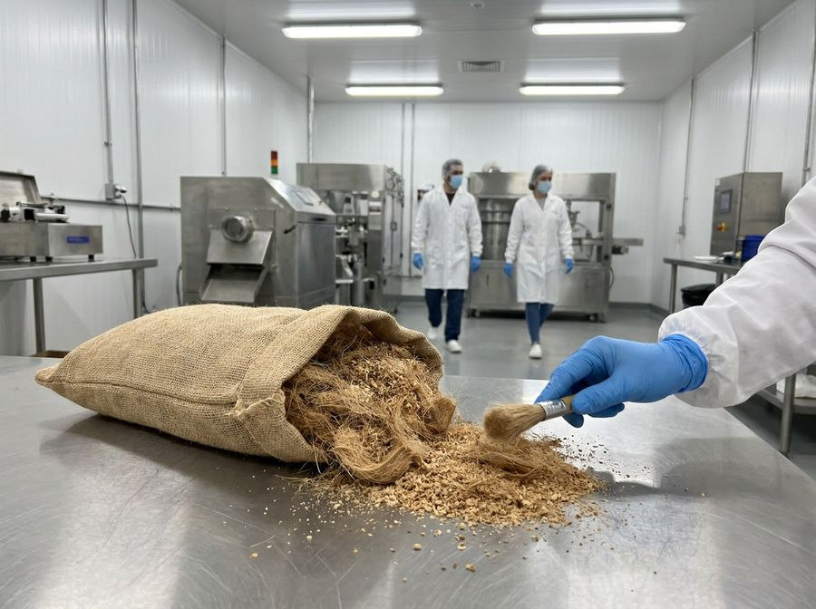
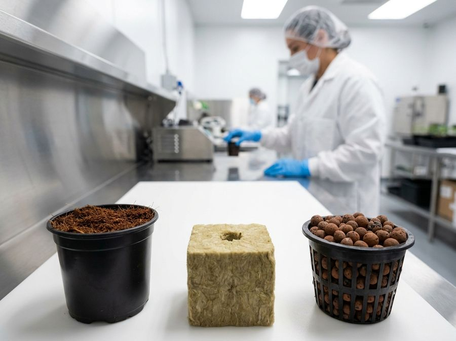
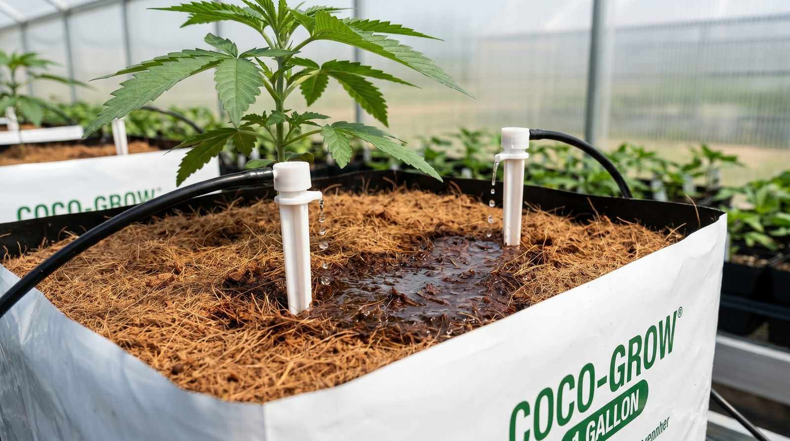
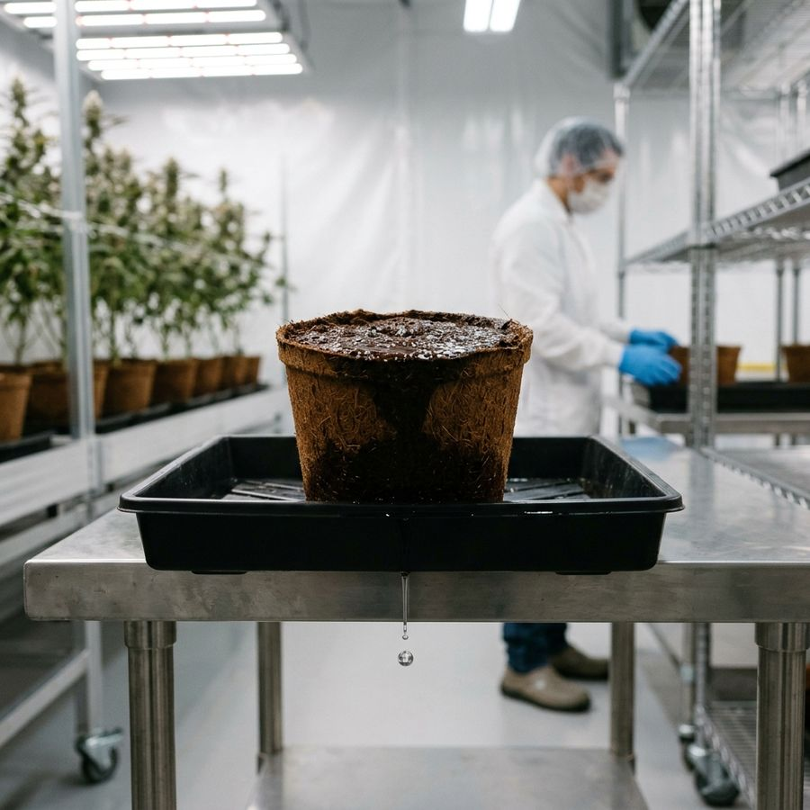
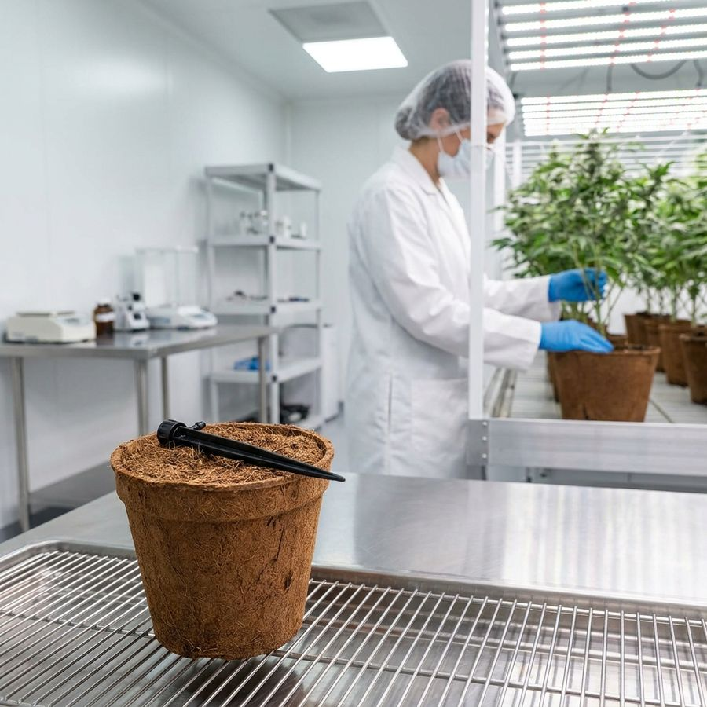
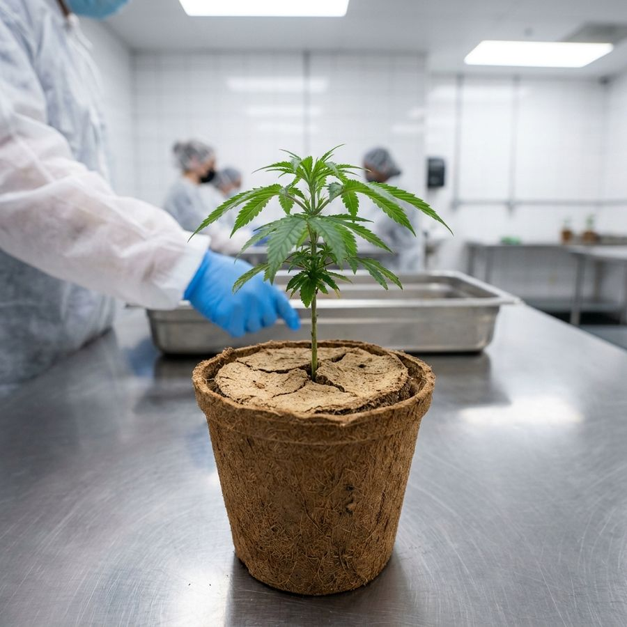

Precision coco cultivation: crop steering in coir
Coco coir lets you talk to your plants through water. This paper shows you what the root zone is telling you, and how a daily rhythm of wetting and drying steers a plant toward leaves or toward flower, explained from zero.
What this paper is
‘Crop steering’ is a simple idea behind a jargon name: by controlling when and how much you water, you can push a plant to grow bigger and leafier, or to focus on dense, resinous flower. Coco coir is the easiest substrate to do this in, because it responds fast and predictably.
You do not need to have measured a root zone before to use this guide. Every term is defined. By the end you will know what the numbers on a root-zone sensor mean, and how a daily wet-and-dry rhythm becomes a steering wheel for your plant.
Anyone growing in coco, or thinking about it, who wants results they can repeat instead of watering ‘when it feels dry.’ Pairs with the root-zone sensor and grow-room systems papers.
The words you need
You do not need to memorise these, just get the gist. Each one comes back in context.


Why coco behaves differently
Coco holds a lot of water and a lot of air at the same time. At field capacity, roughly a fifth to a third of its volume is still air-filled pore space[1]. That oxygen is what keeps roots healthy and lets you water often without drowning them.
Coco also carries a mild electrical charge on its fibres that grabs and releases nutrients: its cation exchange capacity[2]. Think of it as a small battery for feed. It buffers swings, but it also means fresh coco will hold back some calcium and magnesium until it is ‘charged’ (pre-soaked in a cal-mag feed).
New coco can lock up calcium and magnesium for the first week or two. Pre-soak (buffer) it with a cal-mag solution before planting, or expect early deficiency spots until it settles.
Reading the root zone: VWC and EC
A root-zone sensor reports two living numbers: VWC (how wet) and EC (how salty). Together they tell you what the plant is doing and what to do next.
Here is the trick beginners miss: as the substrate dries, the salt left behind gets more concentrated, so EC rises. The water leaves and the fertiliser does not. A sensor estimates the ‘pore-water EC’ the roots actually feel from the bulk reading, the moisture and the temperature[4]. That is why EC readings get unreliable once VWC falls into single digits.
- VWC falling means the plant is drinking (good), until it falls too far and growth stalls.
- EC drifting up as VWC falls is normal. A big jump means the root zone is getting too salty, so water it.
- EC drifting down over days means the plant is eating salt faster than you feed, so raise feed EC.
Dryback: the engine of steering
A dryback is letting the root zone dry by a chosen amount before you water again. It is the most powerful lever you have, because a mild, controlled water deficit changes how the plant grows.
When the root zone dries a little, the plant makes a stress hormone called abscisic acid (ABA), which shifts it away from leafy growth and toward flowering and resin production[7]. Done deliberately at the right time, controlled water-deficit has been shown to raise cannabinoid content without costing yield[5].
The difference is dose and timing. Moderate, measured drybacks that you stop on time preserve yield. A severe drought that runs too long crashes both yield and cannabinoids[6]. Steer with a scalpel, not a hammer. Always water before the plant actually wilts.
Bigger drybacks push generative (flower). Smaller drybacks, kept wetter, push vegetative (leaves and size). That one dial, how far you let it dry, is most of crop steering.




The daily cycle: P0–P3
Growers split the lights-on day into four phases. You do not need fancy gear to think this way. It is a rhythm of dry, refill, maintain, dry.
| Phase | What it is | What it does |
|---|---|---|
| P0 | Lights-off + first part of the day, no water | The biggest dryback. Sets the generative/vegetative tone for the day |
| P1 | A series of small shots after lights-on | Refills the root zone back to field capacity, gently |
| P2 | Maintenance shots | Holds VWC near full and flushes out built-up salt (EC control) |
| P3 | Last shot to lights-off | Lets the root zone dry down before night |
Steering generative vs vegetative
‘Generative’ means flowers, density and resin. ‘Vegetative’ means leaves, stems and size. You bias the plant with a handful of levers that all work by changing how hard the plant has to work for water.
| Lever | Push GENERATIVE (flower) | Push VEGETATIVE (leaf/size) |
|---|---|---|
| Dryback | Bigger, longer drybacks | Smaller drybacks, stay wetter |
| Feed EC | Higher EC (more osmotic stress) | Lower EC |
| Shots | Fewer, smaller, later start | Earlier, more frequent, bigger |
| Day/night temp | Cooler nights, wider day-night gap | Warmer, flatter temps |
| VPD / humidity | Drier air (higher VPD) | More humid air (lower VPD) |
Temperature is on that list because the gap between day and night temperature controls stretch. A warm day with a cool night keeps plants compact. A warm night makes them stretch[9]. Air dryness (VPD) sets how fast the plant transpires, up to a point, then stomata close and everything slows[8].
Every lever interacts. If you yank the dryback, raise EC, drop humidity and cool the night all at once, you will not know what helped or hurt, and you may tip a steer into real stress. Move one dial, watch for a few days, then adjust.
A week-by-week shape
Flowering indoors usually runs about 8–10 weeks once you flip the lights to a 12-hour night[10]. The steering changes across that arc:
- 1Late vegSteer vegetative: keep VWC high, drybacks small, EC moderate. Build a big, healthy plant and root system.
- 2Flower wk 1–2 (stretch)Plants nearly double in height. Keep nights cooler and the day-night gap modest to limit stretch, and begin gentle generative drybacks.
- 3Flower wk 3–6 (build)Peak generative steering: firm drybacks, higher EC, hold P2 full to feed bulking flowers.
- 4Flower wk 7+ (ripen)Ease off. A controlled late water-deficit can lift potency, but stop before stress shows.
- 5Flush / finishLower EC feeds in the final stretch. Let the plant wind down cleanly.
Troubleshooting
| Symptom | Likely cause | What to do |
|---|---|---|
| EC climbing every day, plant sulking | Salt building up, drybacks too hard or not enough flush | Bigger P2 shots to flush, lower feed EC a touch |
| VWC barely drops all day | Overwatering or plant not drinking (cold/dark/sick) | Fewer or smaller shots, check root health, temps, light |
| Leaves clawing, tips burnt | Feed EC too high for conditions | Drop EC, ensure enough water volume per shot |
| Tall, stretchy, floppy plants | Too vegetative: warm nights, small drybacks | Cooler nights, wider day-night gap, firmer drybacks |
| Early cal-mag deficiency | Fresh coco not buffered | Pre-charge coco, add cal-mag to early feeds |
| Wilting between shots | Dryback gone too far (drought, not steer) | Water sooner, shorten P0/P3. Never let it actually wilt |
Realistic expectations
- There is no universal recipe. The right VWC, EC and dryback numbers depend on your strain, pot size, climate and light. Start from the ranges here and tune to your plants.
- Steering is a bias, not a switch. You are nudging odds over days, not flipping a plant overnight.
- The root zone is only one lever. Light, temperature, humidity and airflow all push the same plant. Read the systems guide next.
Get a sensor on the root zone, learn to read one normal day, then change one thing at a time. That discipline, not a magic number, is what makes coco repeatable.
References
- Abad M, Noguera P, Puchades R, Maquieira A, Noguera V (2005). Physical properties of various coconut coir dusts compared to peat. HortScience 40(7):2138-2144. https://doi.org/10.21273/HORTSCI.40.7.2138
- Noguera P, Abad M, Puchades R, Maquieira A, Noguera V (2003). Influence of particle size on physical and chemical properties of coconut coir dust as container medium. Commun. Soil Sci. Plant Anal. 34(3-4):593-605. https://doi.org/10.1081/CSS-120017842
- Malik M, Tlustoš P (2025). Soilless growing media for cannabis cultivation. Agriculture 15(18):1955. https://www.mdpi.com/2077-0472/15/18/1955
- Hilhorst MA (2000). A pore water conductivity sensor. Soil Sci. Soc. Am. J. 64(6):1922-1925. https://doi.org/10.2136/sssaj2000.6461922x
- Caplan D, Dixon M, Zheng Y (2019). Increasing inflorescence dry weight and cannabinoid content in medical cannabis using controlled drought stress. HortScience 54(5):964-969. https://doi.org/10.21273/HORTSCI13510-18
- Stack GM, Cala AR, Quade MA, et al. (2024). Severe drought significantly reduces floral hemp (Cannabis sativa L.) yield and cannabinoid content but moderate drought does not. Ind. Crops Prod. 209:117974. https://doi.org/10.1016/j.indcrop.2024.117974
- Welling MT, et al. (2025). Regulation of secondary metabolism in Cannabis sativa L. by abscisic acid and water deficit during early flower development. Plant Stress 17:100968. https://doi.org/10.1016/j.stress.2025.100968
- Grossiord C, Buckley TN, Cernusak LA, et al. (2020). Plant responses to rising vapor pressure deficit. New Phytologist 226(6):1550-1566. https://doi.org/10.1111/nph.16485
- Myster J, Moe R (1995). Effect of diurnal temperature alternations on plant morphology in some greenhouse crops, a mini review. Scientia Horticulturae 62(4):205-215. https://doi.org/10.1016/0304-4238(95)00783-P
- Moher M, Llewellyn D, Jones M, Zheng Y (2023). Is twelve hours really the optimum photoperiod for promoting flowering in indoor-grown cultivars of Cannabis sativa? Plants 12(14):2605. https://doi.org/10.3390/plants12142605
Citations marked in-text as [n] map to this list. Peer-reviewed sources except where noted. Cannabis tissue culture is strongly genotype-dependent, verify dilutions, hormone doses and local regulations against the primary sources before relying on them.